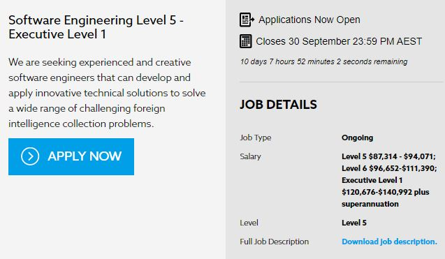
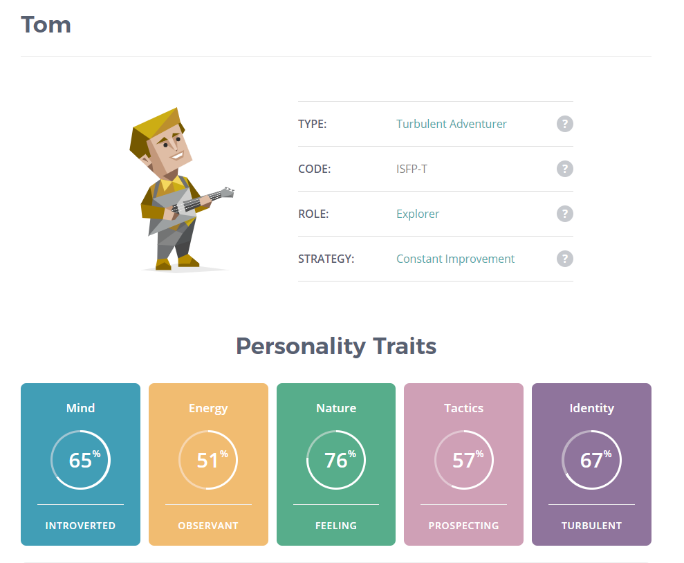
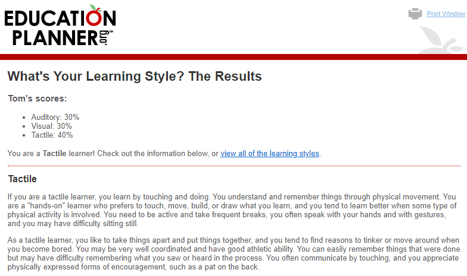
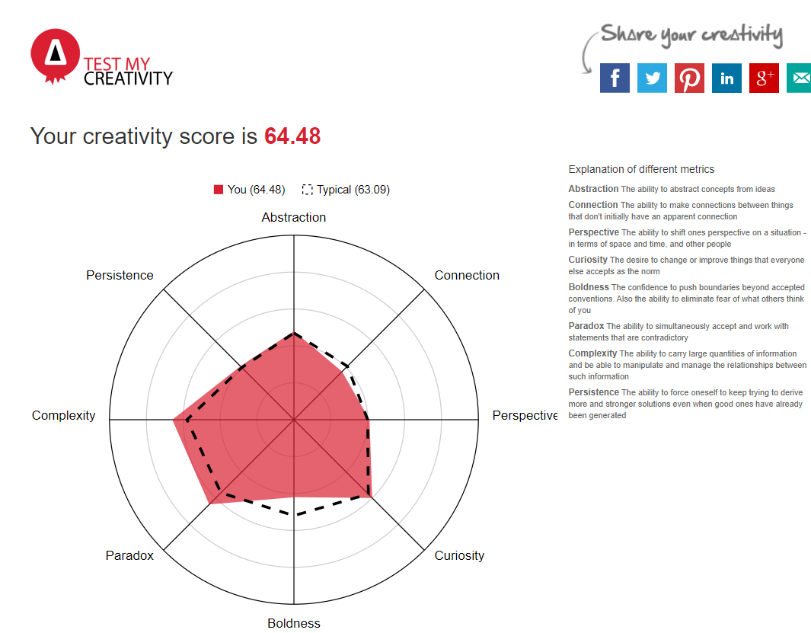
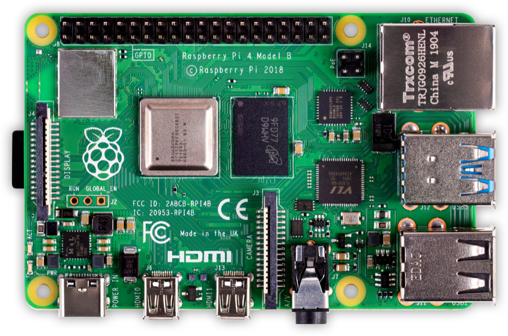

Introduction

Hi! I am 20 years old, working a casual job at McDonalds while studying and living in my family home in Geelong, Victoria. I was born, have lived, and studied here in Geelong for my whole life. In my younger years I ‘studied’, if you can even call primary school study, at Leopold Primary School, and later found myself studying at Geelong High School. As much as I have an interest in IT, I also love cars and photography and combining the two. I find just being alone taking photos to be very relaxing and calming, even if my photos turn out horrible. In my spare time I love sim racing and working on my car, or just going for a drive with no real destination in mind. In school I learned a little German, but only basic greetings and conversation. As I mentioned before I live with my family, which consists of my mum, Michelle, my dad, Darren and my sister, Molly.

Interest in IT
I have always had a keen interest in IT, which I can mostly attribute to watching my dad design websites in the early 2000s.
At school I was always in and out of IT, partly because we barely had enough students interested in the subject and partly because the teachers that we had to teach the subject had very surface level understandings of IT. This made things difficult for me to properly engage with the subject and I eventually found myself losing interest in it.
Fast forward to year 12 and I wound up in a programming class. This started off well actually, but it went downhill quickly and anyone who has studied at a public school will know, distractions are a plenty and I found myself again losing interest.
My interest was rekindled however when I started tinkering with things on my computer, pulling apart games to see how they work and how I could modify them to better suit my needs and wants. I just recently built myself a new PC which got me all excited about new hardware again. I guess a bit of introspection into what I really want out of life kept bringing me back to IT.
So why RMIT? I am not going to lie; I had no idea the sheer volume of courses and universities on offer until my girlfriend and I went through it together. She was the one who put me onto this course through Open Universities and RMIT. There was a lot of deliberation into on campus study vs online study, but with the current global situation I figured why not go 100% online? If there was any course to do completely online, it is this one.
I expect to learn a lot about myself and the subject of IT during my studies. I have never really looked at myself and my study habits. I expect it to be hard, and it is going to take a lot of intrinsic motivation. I want to and expect to learn how to properly study. How to knuckle down and get the best out of myself. I expect to learn how to form, develop and present an idea, to not only assessors but possible future employers as well. I expect to learn how to get the most of my workflow, i.e. making my workflow as efficient and effective as possible. Ultimately I expect to learn the skills required to put me on the path to my
Ideal Job.
Ideal Job
Job Overview
The position I found is for a Software Engineering role at the Australian Secret Intelligence Service, this role is available in many levels. The position requires a software engineer that is able to solve a broad range of foreign intelligence collection problems by being able to creatively and innovatively develop a solution technically. Some other tasks might include, research, design, prototyping and development of solutions for the problems faced. The job is flexible and seems to encompass a broad range of tasks, which interests me as I would love to have a job that has a lot of different aspects to it and seems versatile. There is also just a thrill in working in secret intelligence!

Required Skills
Whilst this job seems to be enthusiastic about teaching an applicant once they are part of the team, the requirements are very heavily weighted on past experience. Applicants should have proven experience in a versatile, SCRUM team. Candidates must also have some relevant experience in one or more of the following programming languages: Java, C, C++, C#, .NET and/or Kotlin. Whilst it is not a requirement, it is also favourable to have experience in any of the following: Linux administration, experience developing web, desktop and mobile applications and/or cloud technologies. Other than experience, a tertiary education in a IT/ software engineering centric field is highly regarded but not required.
My skills and qualifications.
Right now, I feel as though I am in more of a learning and knowledge gaining stage and I do not have many of the desirable traits for this job yet. My knowledge and expertise in software engineering very limited. However, by continuing my studies in IT, and Programming (COSC2452), I am hoping to learn and progress toward meeting those requisites. I understand experience is very import however so a junior job in software engineering may be required before looking into a job as high up as this. I regard myself as being quite resilient, and if there is a problem that needs solving I will work as hard as necessary to solve it. I have found this to be a handy skill to have when it comes to troubleshooting, and a skill that would be very valuable in the field of IT and software development. In terms of qualifications? I can make you a mean Big Mac, but that is where it ends. Being fresh out of high school I do not have any qualifications, unless you count VCE, so while I am a long way from my ‘dream job’, it is definitely something I am willing to work towards.
Plan for success
My plan right now to obtain the skills and qualifications required is to work hard and finish this course and eventually my degree to the highest standard I can. All the while learning and improving key skills in the areas most valuable, such as troubleshooting, working as a team and developing an idea and sticking with it until the end. I plan to familiarise myself with the software and programs necessary to attain my goal of my ideal job.
Personal Profiles

What do the results mean?
After taking the three personal tests that were: The Myer-Briggs Personality Test, an online learning style test and a creativity test, I was not very surprised to see the results. I have always seen myself as more introverted than extroverted and am always up for an adventure which is reflected in my results too. Whilst I have never actually taken any test similar before, I was also not very surprised at my learning style. I have always been drawn to activities that rely on a lot of physical touch, like fixing up my car and building a new PC from new pieces of hardware. In high school, I also loved subjects that were easy to learn through “hands on learning” such as Physics and Media. And as far as my creativity test goes, I usually have not considered myself very creative, however whilst my results aren’t massively different, I was surprised to see I was slightly above average.

How may these results influence
my behaviour in a team?
In regard to how these attributes would affect me in team environments, my results vary. The Myer-Briggs personality test says that I may present as fiercely independent and sometimes competitive, which sometimes tends to be true, these are definite drawbacks to myself working in a team. However, it also lists me as sensitive to others and very passionate, an eager learner and a problem solver which I think are great attributes to have in a team. As I feel I can really connect with people on a team and whilst collaborating I can get really passionate and excited about a project to do. These tests have also displayed that creativity is not a strong point, but I believe that makes me a bit more motivated to collaborate with others so we can share ideas and develop them together. In regard to my learning style test I feel as though that may not affect working in teams as much as my other attributes already discussed do. I feel as though, if a team had a combination of all learning styles it would work better as that way we could all share ideas and there would be many different perspectives according to how each member best learns and thinks.

How should these results be used
to help form a team?
I feel like these types of tests and the results that go with should really be taken into account and looked at when forming teams, as they are very important. In my opinion, a team with all the same personality types and learning styles would be more likely to fail than a team that has a variety of different personalities, learning styles and ways of thinking.
Relating to how my results should be taken into account, I believe my results show how I would make a great addition to a team, whilst there are some drawbacks such as being competitive, this may also provide a motivation for me to work harder too. My creativity test showed that I am persistent, which is a key skill to have especially when working in a team. Being able to work at something until it is finished is vital to get the most out of yourself, and also to help team members if they’re struggling with something.
Project Idea
Overview
My project will be an automated blinds control system. I aim to design, develop and produce a ‘do it yourself kit’ alternative to the big name brand Electronic blind controllers, which, at $200 per controller (Oz Smart Things) certainly aren’t a cost-effective solution. I will make use of a Raspberry Pi, as they can be purchased relatively cheaply, and a stepper motor to drive the blinds. The blinds will be programmable to certain parameters, e.g. Time, sunrise/sunset, user defined weather conditions, or via a hardware controller. Time permitting a mobile companion app would make a lot of sense, however it will not be a design requirement.
Motivation
My motivations lie within both laziness in that I am too lazy to get up and put my blinds up, as well making an action as simple as opening the blinds, accessible to those who may not be able to do it themselves. Another motivating factor is cost. Off the shelf automated blind solutions costing more than $200 puts the barrier of entry quite high, and when houses have numerous windows with blinds that cost adds up. Using a Raspberry Pi and stepper motors significantly lowers that barrier and opens up house automation to be more accessible.

Description
My solution will make use of a Raspberry Pi and, via OpenWeatherMaps API, will control your blinds based on weather conditions. The solution will incorporate hardware controls, i.e. buttons, dials, sliders, but also controllable via a graphical user interface on a display. The Raspberry Pi will make use of the aforementioned API to pull accurate, location-based weather data. Making use of a small OLED or similar low power usage display, the solution will display current weather information, next scheduled operation and blind status. The display will also allow the solution to run as a standalone unit without the need for companion app, although this would be a nice feature to have a possibly develop down the line. The display will show the current status, but also flick to quick settings when pressing a hardware button. The display will allow the user to configure the conditions under which the blinds are operated. These will include but are not limited to; sunset/sunrise, time triggers, weather conditions such as temperature, cloud cover and precipitation. These weather events will be based on the location of the device, which can be set manually via postcode or set to configure automatically over IP.
Tools Used
Some of the tools required will be a Raspberry Pi, I have gone with a 4gb ‘4’ model, however this is just to give me flexibility in terms of what I can use it for. The lower specification models will work just fine as the program will not be very taxing on the hardware. A stepper motor and driver board will also be necessary to drive the blinds. The project will make use of OpenWeatherMaps, an openly available weather API used to pull weather information. A small display will also be used to display current weather information, blind status, and the next blind operation. The whole operation will run on Linux, a free open source operating system.
Skills Required
The skills required to develop this project will be varied. I will need to learn how to program for the Raspberry Pi system. I will also need hardware skills in putting the solution together. I foresee some 3d printing to be required, however I am already somewhat familiar with 3d modelling and printing. The hardware and software is easily acquired; stepper motors and their driver boards are easily purchased from electronics websites, and Raspberry Pis can be purchased directly from the Raspberry Pi website. In terms of learning the skills required for the project, there are many detailed tutorials on the Raspberry Pi website.
Outcome
If the project is successful, I will have created a fully automated blinds control system. The original problem of having to manually operate blinds will be replaced with the automated system and I will no longer have to get up out of my seat to open and close my blinds. This will help keep my productivity up, by reducing the distraction that glaring sun and having to close the blinds manually is.
References
Job Listing
Seek 2020, Technologists Level 4, Level 5, Level 6, EL1, Seek, viewed 20 September 2020, <https://www.seek.com.au/job/50518517?type=promoted#searchRequestToken=6477f740-6bed-4d8d-9cc9-a1a6dd81bd56>
Learning Style Test
Educationplanner.org 2020, What's Your Learning Style? 20 Questions, viewed 20 September 2020, <http://www.educationplanner.org/students/self-assessments/learning-styles-quiz.shtml>
16 Personalities Test
16personalities.com 2020, Tom - Turbulent Adventurer (ISFP-T) | 16Personalities, viewed 20 September 2020, <https://www.16personalities.com/profiles/ba0a12f6013f2>
Raspberry Pi Tutorials
Adafruit Learning System. 2020, Adafruit's Raspberry Pi Lesson 10. Stepper Motor, viewed 2- September 2020, <https://learn.adafruit.com/adafruits-raspberry-pi-lesson-10-stepper-motors>
Off the shelf DIY Blind Controller
Oz Smart Thins 2020, Soma Smart Shades 2, Oz Smart Things Pty Ltd, viewed 20 September 2020, <https://www.ozsmartthings.com.au/products/soma-smart-shades?variant=31939435561034¤cy=AUD&utm_medium=product_sync&utm_source=google&utm_content=sag_organic&utm_campaign=sag_organic&utm_campaign=gs-2019-01-13&utm_source=google&utm_medium=smart_campaign&gclid=CjwKCAjw2Jb7BRBHEiwAXTR4jamFHrD2PJOQrO66xXEG7P5TWK4Yvm_A4AK1y3ehcGX6sHy9Z3DlVxoC2H4QAvD_BwE>
Open Weather Map API
Openweathermap.org 2020, Current Weather And Forecast – Openweathermap, viewed 20 September 2020 <https://openweathermap.org/>
Creativity Test
Testmycreativity.com 2020, Free Online Creativity Test – Testmycreativity, viewed 20 September 2020, <http://www.testmycreativity.com/>
Site Template
HTML5 UP 2020, Dimension By HTML5 UP. Viewed 20 September 2020, <https://html5up.net/dimension>